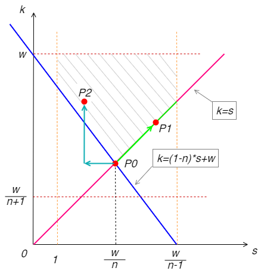

空间金字塔池化（SPP）关键参数计算¶
发布于：2022-07-03 | 分类：mathematics
空间金字塔池化（Spatial Pyramid Pooling）方法关联了不定尺寸输出的卷积层和固定大小的全连接层，一方面可以适应不同尺寸图片输入，避免了统一图片大小的前处理操作；另一方面可以提取不同尺寸的空间特征信息，进而提升模型对于空间布局和物体变形的鲁棒性。SPP的基本原理请参考原论文或相关解读，本文基于输入输出尺寸，分析SPP关键参数例如窗口尺寸（kernel）、步长（stride）及边距（padding）的计算方法。
问题提出¶
已知卷积后输出尺寸 (w, h)，空间金字塔池化后目标输出 (n_w, n_h)，计算池化层的窗口尺寸(k_w, k_h)，步长(s_w, s_h)及边距(p_w, p_h)。为了简化描述，以下仅基于其中一个维度计算，另一维度采用完全相同的计算公式。因此，相应参数简化为：
已知输入、输出尺寸w和n，求池化窗口尺寸(k)，步长(s)及边距(p)。
如果正向计算，公式为：
其中 \lfloor x \rfloor 表示对x向下取整，例如 \lfloor 1.5 \rfloor = 1，同理向上取整符号及例子：\lceil 1.5 \rceil = 2。
原始论文公式¶
原论文中的计算公式：
有些解读论文的博文指出了问题及反例：
取 w=7, n=4，根据公式（2）得出 k=2,s=1,p=0，
然而将池化参数带入公式（1）却得出矛盾的结果：n=5！
注意：
这是作者为论文中特定场景提出的，确实并不具备（作者也没声明）通用性。
初步修正的公式¶
参考博文，给出了如下通用性更好的公式：
对上一个例子 w=7, n=4，根据公式（3）可以得出正确结果： k=2,s=2,p=1。
但还是可以找到有问题的例子：
取 w=5, n=4，根据公式（3）得出 k=2,s=2,p=2，
带入公式（1）验证没问题，但是 pytorch要求 padding 不超过 kernel 的一半 即 k >= 2p，显然此处不满足。
可行域分析¶
为了方便分析这个问题，先排除两种特殊情况：
-
当 n>w 时，不符合SPP的物理意义
-
当 n=1 即输出为1时，取窗口正好为输入尺寸：k=w, s=1, p=0
于是在 w \geq n \gt 1 条件下，列出以下限制条件/不等式：
其中，
- 不等式（4-1）直接从等式（1）去掉取整符号得到；
- 不等式（4-2）避免引入过多无意义的边距信息，也是 pytorch 中的一个限制；
- 不等式（4-3）要求步长不大于窗口大小，否则跳过了有效区域；
- 不等式（4-4）左边表示池化操作的实际作用范围，右边表示特征图的有效位置，因此整个式子要求池化操作覆盖所有有效区域。
将不等式（4-1）左半部分取整得到 p 的计算公式：
代入 k=s，公式（5）退化为公式（3）计算 p 的部分，表明它是公式（5）更具一般性，公式（3）的 p 只是一个特例。
结合（4-1）左半部分和（4-2）右半部分：
结合（4-1）右半部分和（4-3）：
不等式（4-4）缩放一下去掉 p：
综合得到：
注意各个参数都是非负整数，但此刻先不做区分，直接线性规划求解可行域，得到下图。

显然，解可能不唯一。我们先得到一个特征点 P_0(w/n, w/n)，然后基于不同的策略有不同的选择：
-
如果沿着绿色箭头方向往 P_1 方向走，窗口大小始终与步长相等，即传统的池化模式。
-
如果沿着青色箭头方向往 P_2方向走，窗口大小始终大于步长，即带重叠模式的池化。
以 P_1 方向为例，因为 k,s 都是正整数，我们取 P_0 右侧最接近的正整数值，即 $k = s = \lceil w/n \rceil $，于是得到了网上常见的初步修正的公式，即上文的公式（3）。
至此，可以解释和统一之前的计算方法。
公式（3）在什么情况下不再适用？¶
对照可行域图就很好解释了——绿色线段上可能不存在整数解。
例如例子中 w=5,n=4，绿色线段两个端点的 s 坐标分别为 1.25 和 1.667，二者之间并不存在正整数。
那么，公式（3）在什么条件下才适用呢？令 w=a*n+b，其中 0 \leq b \lt n，则
显然，w/(n-1) 的整数部分至少达到 a+1 即 (a+b)/(n-1) \geq 1 时，绿色线段标注的可行域上才有整数解。因此，公式（3）的使用条件：
如何处理公式（3）不适用的情况？¶
当 w,n 不满足不等式（7）时，公式（3）失效，那就走 P_2 的路线，如青色箭头所示：
-
此种情况下往右显然不存在可行的s了，于是向左一步得到 P_0 附近的 s；
-
然后向上增大 k 知道满足可行域要求。
以上过程反映了公式（2）的思路，但是为了更具通用性，确定 k 时需要检查是否落在可行域内。将公式（2）中 s 的表达式代入（4-4）的缩放式得到 k，然后将 k,s 代入公式（5）计算 p，最终得到公式（2）的更一般形式：
回到 w=5,n=4 的例子，代入上式得到 k=2, s=1, p=0，满足所有约束。
注意：
上式和公式（2）的最直接区别是 k 的计算方法。公式（2）在定义 k,s 的同时强行设定 p=0（或者说忽略了 p 的计算），实际上三者是相互关联的。公式（8）通过构造 k，使 p=0 自然得到满足。
完整算法¶
适用条件：w \geq n \gt 1，不满足此条件时，参考上文例外描述。 特别说明：以下算法优先选择传统非重叠的池化方式，只有在无法满足时，才考虑重叠的池化方式。如果倾向于重叠的池化方式，则直接进入第（2）部分即可。
（1）当 \lfloor w/n \rfloor + \left(w \mod n\right) + 1 \geq n 时，
（2）\lfloor w/n \rfloor + \left(w \mod n\right) + 1 \lt n 时，